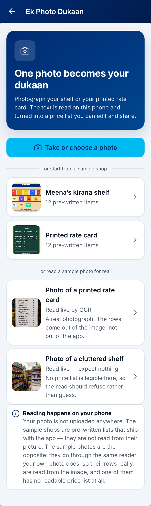
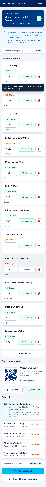
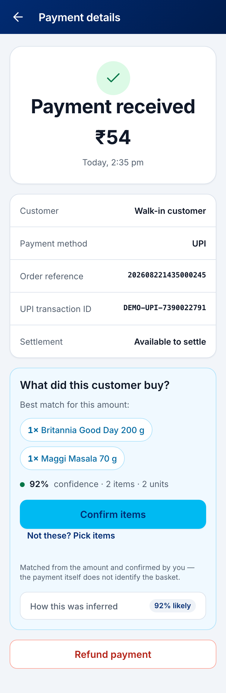
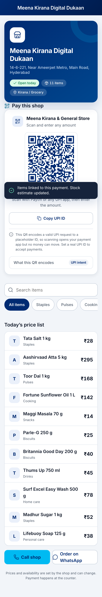
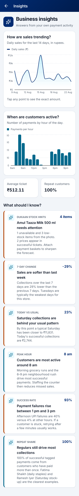

Both halves matter. The knowing is the need. The typing is why every inventory app she has been shown is still empty.
At twenty seconds a product, a 200‑line catalog is over an hour of unpaid data entry — and prices change, so it is never done once. She is not lazy. Data entry is a second job that pays nothing. So she guesses, and on Saturday evening the Thums Up is gone before she notices.
She photographs the shelf, or the rate card already taped to her wall. OCR runs on her own phone and the lines become named items with prices, which she can edit.
Out the other side: a digital catalog, a shareable storefront, and a UPI QR.

Photograph it, or read a sample photo for real

Catalog, editable. The merchant is the source of truth
Shelf or rate card, on her own phone.
OCR + fuzzy match. She edits and confirms.
A real upi://pay intent customers can scan.
₹45. An amount, not a scan. Nothing was rung up.
Bill photographed, order drafted, payout fires.
Weighted demand → days of cover → reorder.
Only after she taps confirm. Never on a guess.
Solve for the basket that sums to exactly ₹45.
Remove Paytm and this diagram has no input and no output: no QR to take the money, no amount stream to infer from, and nothing to pay the supplier with. It is not a catalog app that happens to sit next to payments.
Every row carries its own confidence, and skipped lines carry a reason
The honest detail: 13 lines were read and one was dropped — the card's own heading, MEENA KIRANA - RATE CARD, because it has no price on it. The name filter also refuses GST‑number‑shaped strings, which is why GSTIN 27AAAPL1234C can never become a product. The same code path on a cluttered shelf photograph returns zero lines and stops, instead of inventing a catalog. Reprint all of it with node server/verifySamplePhotoOcr.mjs.
Her prices are known. The amount is known. So ask the only question left: which combination of her own prices adds up to exactly ₹45?
One bottle of Thums Up. She taps confirm, and the shelf estimate drops.

“What did this customer buy?” — proposed, not applied
In plain words that is subset‑sum: try the combinations, keep the ones that land on the exact total, rank them by what a real basket looks like — few items, small quantities, things this shop has actually sold before. An amount can never prove a basket, so confidence is capped at 92%, runners‑up are listed, and stock only moves after she confirms. On an ambiguous catalog ₹45 yields eight baskets and confidence falls to 28%, and we will show you that on purpose.
tesseract.js in the browser. Greyscale and contrast‑stretched first. No upload, no API key, no server. Per‑line confidence is surfaced, not hidden.
“Aashinvaad Atta 5kg” resolves to the real product. The lexicon re‑spells what was printed; it never adds a product the photo did not show. No match means the row is kept exactly as read.
Exhaustive DFS over price points: max 4 distinct items, 24 units, a 250,000‑node budget so the UI cannot hang. Softmax over a plausibility cost turns candidates into probabilities.
Exponentially weighted units‑per‑day from confirmed baskets gives days of cover and the reorder list. Capped at 85%, because on‑hand was estimated from a photograph, never counted.
Every one of these declines rather than guesses: no text found means no catalog; a GST‑shaped string is never a product name; no exact sum means “add the items by hand”; several exact sums means the merchant picks. Rule‑based and auditable end to end — every number on screen opens a panel that shows how it was produced, which is the only version of AI a shopkeeper will keep using after week one.
The only place stock leaving the shelf is observed without asking her to type. The QR is a genuine NPCI upi://pay intent — scan it on your own phone during the demo and it opens a real payment app with the amount filled.
The prediction is worthless if acting on it needs a second app. Reorder ends in a payment to a real supplier, from inside the app that already holds her money.
PaytmService has three implementations: demo, our API, and LivePaytmService. Going live is that file, a webhook route and one line in the container — documented call‑by‑call in PAYTM_INTEGRATION.md.
The tr reference we already generate for every dynamic QR is the join key that makes step two possible — it links a QR we rendered to a webhook we later receive. A standalone catalog app has no sensor and no actuator. It would have to ask her to type her sales, which is the product we are refusing to build.
One photo replaces an hour of data entry. Editing a wrong price is one tap, and deletes are undoable for five seconds.
Photograph, look, tap. Quantities are honest ranges — “about 2–3 left” — never a fake integer. Status is shown by shape and number, never by colour alone.
Her phone, her existing QR, inside an app she already opens every morning. Nothing to buy, nothing to install, no staff training.

What her customer sees

What she sees on Saturday evening
We have no pilot data, and we are not going to imply otherwise. The pilot we would run: 30 kirana stores on live Paytm QR for eight weeks, half with the feature and half without, each starting from one photograph. The metric is stockout days per fast‑moving SKU — days a top‑20 item was unavailable — with catalog completeness after week one and share of payments the merchant attributes as the leading indicators. That is the number the feature has to move.
OCR runs in the merchant's browser. No GPU, no per‑call model spend, no inference bill that grows with merchant count — and it keeps working when the venue Wi‑Fi does not.
No training data, no labelling, no model to retrain per city or language. The solver's bounds and costs are read in source, not learned — so a wrong answer is diagnosable instead of mysterious.
155 tests across 12 files, plus a 40‑check harness that walks the exact judged path end to end, including adversarial amounts and rejected input. node server/verifyJudgePath.mjs — 40 passed, 0 failed.
Ships inside Paytm for Business, which merchants already open daily. No new download, no new login, no acquisition cost. Public repo, deployed and live right now.
Scoped honestly: this build targets a 10–15 item catalog the owner can review in one sitting, not a 2,000‑SKU supermarket. Printed type, not handwriting. Those are the next two pieces of work, not hidden failures.
Why: live authorisation needs merchant credentials and a registered HTTPS callback that no hackathon team should have, and a fake bank confirmation is the one lie a merchant would eventually catch. So we built the layer we could build honestly and labelled the layer we could not — in the app, under Profile → About, and on each screen where it appears. Not affiliated with or endorsed by Paytm.